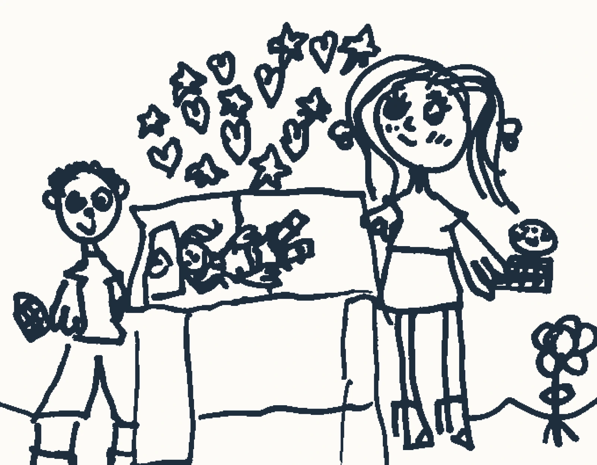

Não é mais estimulação. É mais presença.
O que a neuropsicologia do desenvolvimento mostra sobre o que o bebé precisa — e o que isso muda na leitura clínica de um caso.

Texto dirigido a colegas e a estudantes de psicologia. Desenvolvido no âmbito do workshop Neuropsicologia do Desenvolvimento Saudável do Bebé, apresentado no 32.º Encontro Nacional de Estudantes de Psicologia, a 3 de outubro de 2026.
O neuromito da estimulação máxima
Há uma ideia instalada, repetida em consultas, em grupos de pais e nas secções de parentalidade das revistas: quanto mais estimulação, melhor. Mais atividades, mais brinquedos, mais linguagem produzida, mais tempo de ecrã educativo — e melhor será o desenvolvimento do bebé.
A investigação aponta noutra direção. O que os estudos das últimas décadas identificaram como mecanismo mais determinante no desenvolvimento precoce não é a quantidade de input que a criança recebe. É a qualidade da troca: o vai e vem de sinais e respostas entre a criança e quem cuida dela.
Reciprocidade, e não volume
É a esta troca que a literatura de divulgação do Center on the Developing Child, da Universidade de Harvard, chama serve and return. A criança serve — vocaliza, olha, gesticula, sorri. O adulto devolve — responde, nomeia, expande, aguarda. E o ciclo recomeça. O Working Paper n.º 1 do National Scientific Council on the Developing Child descreve estas trocas contingentes e individualizadas como o material de que se faz a arquitetura cerebral em construção.
A distinção entre volume e reciprocidade tornou-se mensurável com o trabalho de Romeo e colaboradores, publicado em 2018 na Psychological Science. A partir de gravações áudio recolhidas em casa, os autores mostraram que as crianças que tinham experimentado mais turnos conversacionais com adultos apresentavam maior ativação da área de Broca durante o processamento de linguagem — e que essa ativação explicava perto de metade da relação entre a exposição linguística e o desempenho verbal. O efeito manteve-se depois de controlados o nível socioeconómico, o desempenho cognitivo e o número absoluto de palavras ouvidas.
Uma precisão que importa
O estudo de Romeo e colaboradores foi conduzido com 36 crianças entre os 4 e os 6 anos, e não com bebés. É prudente lê-lo como demonstração do mecanismo — a reciprocidade conta mais do que o volume — e não como evidência direta sobre o primeiro ano de vida. Os próprios autores assinalam que o desenho é correlacional e não permite inferir causalidade.
O que isto muda na clínica
Em primeiro lugar, desmonta o neuromito da estimulação máxima, e com ele parte da ansiedade de desempenho que acompanha muitos pais de primeira viagem. A pergunta deixa de ser quanto se faz e passa a ser como se responde.
Em segundo lugar, orienta a anamnese. Quando chega uma criança com atraso de linguagem, com dificuldades de regulação emocional ou com um padrão de comportamento que preocupa, a qualidade da interação precoce é uma variável a explorar — não para atribuir responsabilidade aos cuidadores, mas porque é aí que a intervenção pode chegar.
«Ele é muito calmo, não nos dá trabalho nenhum»
É uma frase que aparece com frequência em consulta, dita com alívio e por vezes com orgulho. Merece atenção.
O paradigma do still-face, descrito por Tronick e colaboradores em 1978, mostra o que acontece quando o adulto deixa de responder: o bebé escala as estratégias de reconvocação — sorri, olha, vocaliza, gesticula — e, não encontrando resposta, reduz as tentativas de contacto e orienta-se para os objetos. É um procedimento laboratorial, com uma interrupção breve e deliberada, e não descreve por si só o que se passa numa casa.
A ponte para a clínica faz-se por outra via: a do comportamento de retraimento relacional sustentado, que Guedeney e Fermanian operacionalizaram na Alarm Distress Baby Scale. Aí, o que se observa não é uma reação pontual, mas um padrão estável — expressão facial, contacto ocular, nível de atividade, vocalizações, capacidade de captar e manter a atenção de quem observa. Um bebé assim pode parecer tranquilo à entrada do consultório. Parecer tranquilo não é o mesmo que estar bem.
Uma nota deontológica
- O still-face é um paradigma de indução de stress, usado em contexto de investigação e com protocolo próprio. Não se sugere a famílias como demonstração nem como teste caseiro.
- A observação da díade em consulta faz-se sem induzir rutura: observa-se o que existe, e não o que a interrupção provoca.
Período de sensibilidade, não janela que fecha
A primeira infância é um período de sensibilidade acrescida — o que não significa que a intervenção só seja possível cedo. Que intervir precocemente seja mais eficiente é diferente de afirmar que depois já não vale a pena. O que a neuropsicologia do desenvolvimento sustenta é que, durante este período, a qualidade das trocas pesa mais do que em qualquer momento posterior.
E o que a criança precisa não é de mais estimulação. É de uma presença que responda.
Observar a díade, e perguntar sobre ela
Duas folhas que traduzem este texto em prática: uma grelha para registar as trocas durante a observação, e um guião de anamnese sobre a interação precoce, com as cautelas de utilização.
Este texto tem fins informativos e não substitui avaliação nem acompanhamento profissional. Cada situação exige uma leitura própria.
Referências
- Guedeney, A., & Fermanian, J. (2001). A validity and reliability study of assessment and screening for sustained withdrawal reaction in infancy: The Alarm Distress Baby Scale. Infant Mental Health Journal, 22(5), 559–575. https://doi.org/10.1002/imhj.1018
- National Scientific Council on the Developing Child. (2004). Young children develop in an environment of relationships: Working Paper No. 1. Center on the Developing Child, Harvard University.
- National Scientific Council on the Developing Child. (2012). The science of neglect: The persistent absence of responsive care disrupts the developing brain: Working Paper 12. Center on the Developing Child, Harvard University.
- Romeo, R. R., Leonard, J. A., Robinson, S. T., West, M. R., Mackey, A. P., Rowe, M. L., & Gabrieli, J. D. E. (2018). Beyond the 30-million-word gap: Children’s conversational exposure is associated with language-related brain function. Psychological Science, 29(5), 700–710. https://doi.org/10.1177/0956797617742725
- Tronick, E., Als, H., Adamson, L., Wise, S., & Brazelton, T. B. (1978). The infant’s response to entrapment between contradictory messages in face-to-face interaction. Journal of the American Academy of Child Psychiatry, 17(1), 1–13. https://doi.org/10.1016/S0002-7138(09)62273-1
A caracterização da primeira infância como período de sensibilidade acrescida, e não como janela que se fecha, assenta num corpo alargado de literatura sobre plasticidade e períodos sensíveis, e não numa obra isolada.